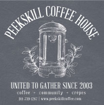
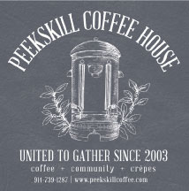
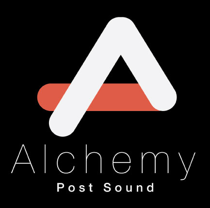
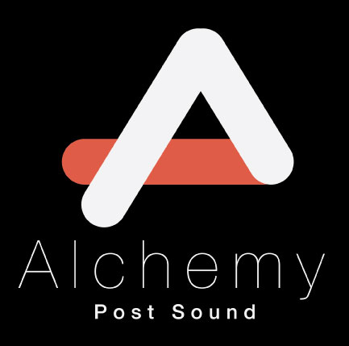

| Time | Date | Event | Info |
|---|---|---|---|
| 8:00 pm | May 13 | Screening | Special Selection: But Not For Me |
| 12:00 pm | May 14 | Workshop | Workshop with Impolite Company |
| 2 - 6 pm | May 14 | Screening | Screening of Official Selections |
| 8:00 pm | May 14 | Screening | Special Selection: La Jaula De Oro |
FROM ROUTE 9
Heading North to Peekskill – SOUTH STREET/HUDSON AVENUE EXIT, follow exit straight onto SOUTH STREET until it ends. At end- corner of South and Division streets, follow road sign instructing a RIGHT TURN and QUICK LEFT to Brown Street. Heading South to Peekskill – Main Street / Route 6 Exit. At the fourth traffic light make a RIGHT ON BANK STREET. Follow straight into parking lot adjacent to Paramount Center. TURN RIGHT ON BROWN STREET. Paramount Hudson Valley is on your right.
FROM ROUTE 6
Heading WEST into Peekskill – Peekskill is at the end of Route 6 on the East side of the Hudson River, follow into City of Peekskill, (past Mohegan Lake and Cortlandt Manor) at BANK STREET (three corners, on left are amazing metal sculptures, on right a thrift store) follow road sign to TURN LEFT and follow straight into parking lot adjacent to Paramount Hudson Valley. Park and walk straight to Brown Street and on right is Paramount Theater Hudson Valley. (Across from Bank of NY and Verizon)
FROM ROUTES 202 & 35
Heading West into Peekskill, proceed past Hudson Valley Hospital, until the stop light at BROAD STREET, across from Fire House. Take a RIGHT onto BROAD STREET, then the first LEFT at the blinking yellow light, which is BROWN STREET. Proceed 5 blocks and the Paramount Hudson Valley will be on your right.
FROM TACONIC PARKWAY
Take PEEKSKILL 202 & 35 exit (just before Yorktown from North or after from South) exit RIGHT and follow above directions.
FROM METRO-NORTH RAIL ROAD
Hudson East line. Station is approximately one mile from Paramount Hudson Valley. Take Taxi or walk left to Hudson Ave and uphill and turn left on South Street; follow Rt. 9 directions.
FROM BEAR MOUNTAIN BRIDGE
From West Side of Hudson River. Cross bridge, turn RIGHT, follow “goat path” down the mountain to Anvil Circle, exit opposite side and head SOUTH RT. 9. Follow directions for Route 9 from the North.
FROM TAPPAN ZEE BRIDGE
From the West Side of Hudson River. Cross bridge and take FIRST EXIT-RT 9 / TARRYTOWN, and head North on RT. 9 to Peekskill; follow directions for RT. 9 from South.
OR
Cross Bridge and take 287 towards White Plains. Take first exit towards SAW MILL RIVER PARKWAY/ TACONIC PARKWAY. Follow Saw Mill River Parkway until Taconic Exit, follow directions for Taconic Parkway.
Parking Information
Parking for theater-goers is available in the public municipal lot adjacent to our building, as well as on-street in front of the theater. There are also two multi-level parking garages located within walking distance of the theater. The closest parking garage is located on the corner of South James Street and Park Street opposite La Placita Market (at 1049 Park Street) and is approximately a block away. The second parking garage can be found on Nelson Avenue opposite the Field Library (at 4 Nelson Avenue) and is approximately 2 blocks away. As always, all metered parking in Peekskill is free after 5 PM and all day Saturday and Sunday.
Back to Top
| Time | Date | Event | Info |
|---|---|---|---|
| 5:00 pm | May 15 | Screening | Official Selection Screening |
| Time | Date | Event | Info |
|---|---|---|---|
| 12 - 4 pm | May 15 | Screening | Screening of Official Selections |
By Train
Metro-North trains leave from Grand Central Terminal to Peekskill. It takes one hour. Trains from Poughkeepsie and Beacon run south to Peekskill. Trains run hourly in either direction and more frequently at rush hours. For train information, visit www.mta.info or call 212.532.4900 or 800.metro.info. From north of Poughkeepsie, take an Amtrak train to Poughkeepsie and transfer to a Metro-North train. Taxis are available at the Peekskill Train Station. It is a 5 minute ride to the HVCCA; approx 1.2 miles.
By Car
Take the West Side Highway north, which becomes the Henry Hudson Parkway, which then becomes the Saw Mill River Parkway. At the interchange bear right onto the Taconic State Parkway to the right, towards Albany. After about 12 miles exit the Taconic State Parkway at Routes 35/202, Yorktown Heights. At the end of the ramp, turn left towards Peekskill. Go 4.1 miles and make a right onto Dayton Lane at the Beach Shopping Center sign. Go 0.3 mile to traffic light and make a left onto Main St/Route 6. Go 0.6 miles and the HVCCA is on your left (1701 Main St).
By Bus from NYC (approximately 1 1/4 hour)
FDR over Willis Avenue Bridge, left onto NYS Thruway 87 (Major Deegan Expressway) north. Pass Yonkers then through toll plaza, and after approx 6 miles exit onto 87 and 287 West (towards TappenZee Bridge). Shortly thereafter take exit #9 towards Tarrytown. This is Route 9. Take Route 9 North. (Do not cross the Tappan Zee Bridge) Continue on Rt-9 NORTH – approx. 14 mi. Take exit Route 6/202 on right, east towards Peekskill. At top of exit turn left (east) onto Route 6 (Main Street) for approximately 1 mile. Arrive at 1701 MAIN ST, PEEKSKILL, HVCCA, on right.
From Dia:
Beacon Start at 3 Beekman Street, bear right on Wolcott Ave, Wolcott Ave becomes RT-9D, turn left onto RT-403, continue on Albany Post Rd, continue on Old Albany Post Rd, continue on Highland Ave, bear right on N Division Street, turn left on Main Street, go 0.7 mi and HVCCA entrance will be on your right.
To Dia:
Beacon From HVCCA Make a left onto Main Street. Continue on Main Street and take Route 9 to Fishkill. Take I-84 West two exits to Exit 11: Route 9D. Make a left turn onto Route 9D South. After traveling approximately one mile, make a right turn onto Beekman Street. Continue on Beekman Street .5 miles. Dia: Beacon’s entrance is on the right, marked by a gray sign.


 

 
